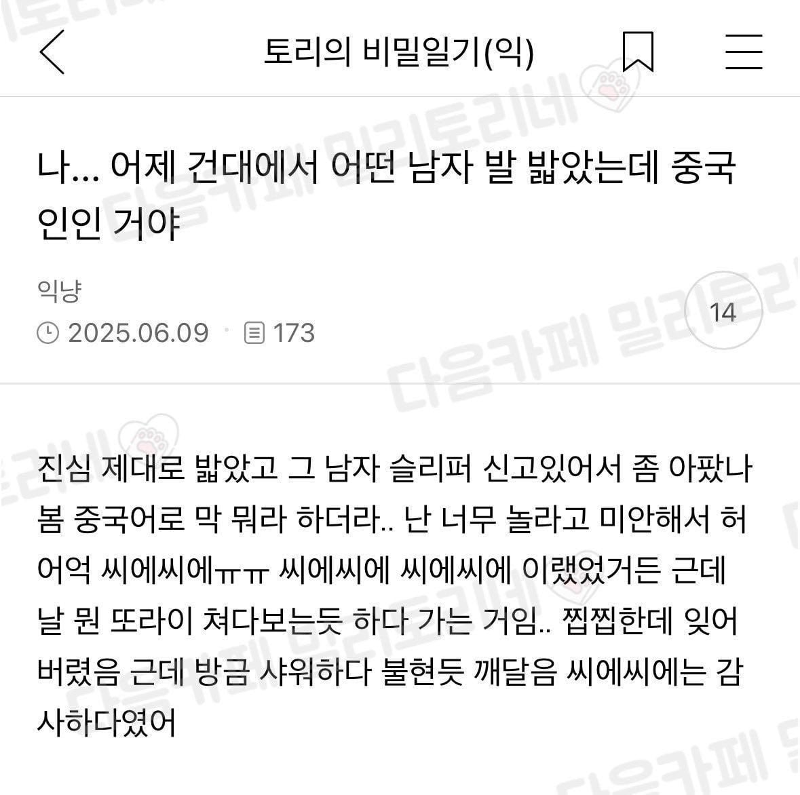

건대에서 실수로 중국인 남자 발 밟은 여자
댓글
오..
하오하오
뚜이부치인가
ㅇㅇ
실례합니다...는 뿌하오이즈 정도면 되고
궁금해서 유학생 지인 중국인한테 물어봄
뚜이부치 맞긴한데
중국인들은 그럴때 그런말 안한다고함
왜 해야하는지 되묻는거 보고 아 "중국인"들 이 핵심이구나 깨달음
두번 더 밟지
뭐라고 해야함? 니취팔러마 이거였나?
그건 밥먹었냐임 뚜에이부치 라고 하면 될껄
차오니마 가 좀 더 정중한 표현
두손 공손히 모으면서 하오츠 하오츠 하면됨...
ㅋㅋㅋㅋㅋㅋ 밟힌 중국인도 대화가 안될거같으니 그냥 포기한 ㅋㅋㅋㅋ
"본토에서도 이정도는 보기 힘든데..."
ㅋㅋㅋㅋㅋㅋㅋㅋㅋㅋㅋㅋㅋㅋㅋ 밟아놓고 캄사캄사 ㅠㅠ 캄사
중국인의 발을 밟게 해주셔서 무한 감사..!
밟힌건 안타깝긴한데 거울치료 제대로 했네
바이짜이찌엔
뚜이부치! 뚜이부치! 으아아 썅씰라
띠부동!! 띠부동!!
사패새끼인가 하고 도망간듯
네 발을 밟게 해줘 감사하다
똥 주, 뿌쉬 저우
따거 니 발 따거
나 중국 출장가서 술 개꼴아가지고 상대측 차장급 되는 사람한테 토하고는 술 취해서는 뚜이부치 안하고 짜이찌엔 존나 했었음.. 그 마저도 현지직원이 너 그날 집 가는 차 탈때까지 짜이찌엔이라고 걔 붙잡고 존나그러더라 하면서 놀리더라 다음날 홍바오 한갑 사다줬다
시발ㅋㅋㅋㅋㅋ
나에게 중국인을 밟을 기회를 줘서 감사하다
뿌하오이쓰
쏘리 하면되지 뭐
하오마!
대체 얼마나 밟고싶었던거냐고
존나 미안한 표정으로 감사합니다 감사합니다 하면 의미는 전해졋을거임 똥씹은 표정인건 걍 발 밟혀서 + 그사람 디폴트 표정 아니었을지 ...
췐궈 쭈이 따더 메이뉘 루오리아오 지에 다이 쫑씬 샹씨얄라!
나에게 감사하다고 해
샤삐 라고 하면됨
기안 하우데어 생각나네 ㅋㅋㅋㅋㅋㅋㅋㅋ
스미마셍 해야지
욕해주셔서 감사헤요오오옷!!!